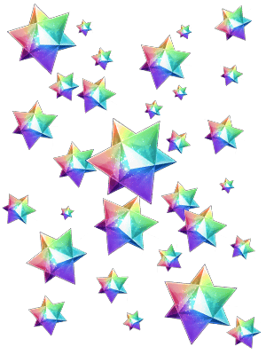
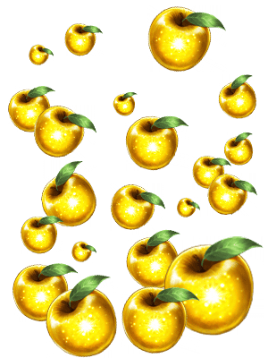

關於記念主線關卡第七章「第七特異點 絕對魔獸戰線 巴比倫尼亞」所實施的「七章通過應援宣傳活動」，配合最終決戰開幕行程的發表，期間的延長及宣傳活動內容一部份追加，變更為「最終決戰即將開幕宣傳活動！」！
|
對在2016年12月22日(四) 12:59前通過「第七特異點 絕對魔獸戰線 巴比倫尼亞」的全部玩家贈送聖晶石30個！ ◆對象期間◆ ◆贈送對象◆ ※在上述時間前，在管理室(ターミナル)畫面的關卡橫幅必須要有「CLEAR」的文字顯示 ◆贈送内容◆ ◆領取條件◆ |
 |

由於最終決戰開放的條件必須通過主線關卡第七章，現在實施的主線關卡AP消費1/2宣傳活動的對象自2016年12月17日(六) 16:00從「第六特異點 神聖圓桌領域 卡美洛」變成到「第七特異點 絕對魔獸戰線 巴比倫尼亞」為止！
◆舉辦期間◆
2016年12月17日(六) 16:00～12月22日(四) 12:59
◆對象關卡◆
冬木、奧爾良、羅馬七省、歐開諾斯、倫敦、合眾為一、卡美洛、巴比倫尼亞內全部的主線關卡
※自由關卡、幕間物語為對象外。
|
下述期間中，每天贈送2個黄金の果実做為登入獎勵！ ◆舉辦期間◆ ※登入獎勵在AM3:00配發。 |
 |